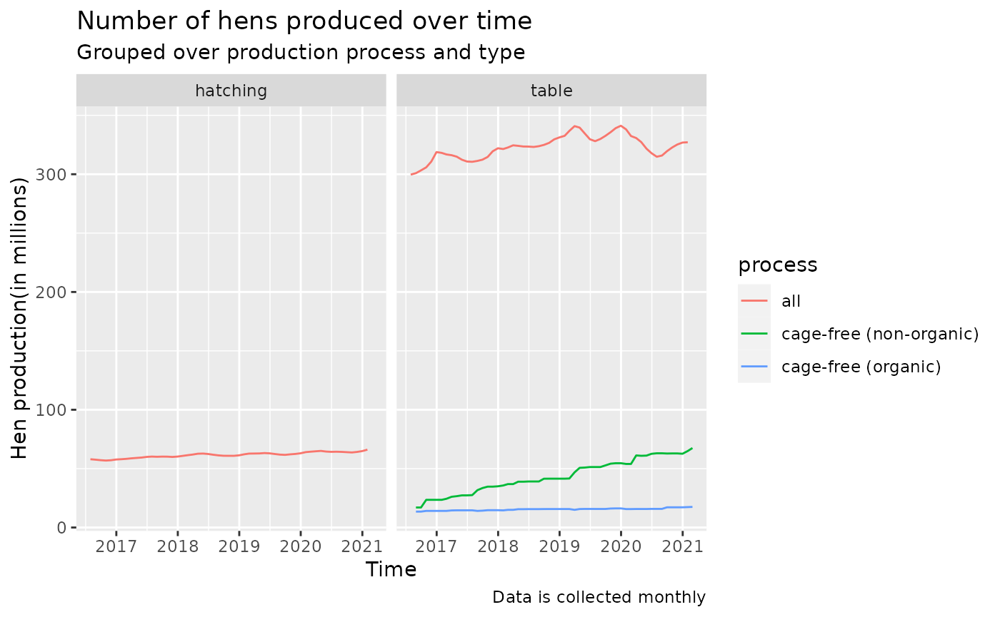
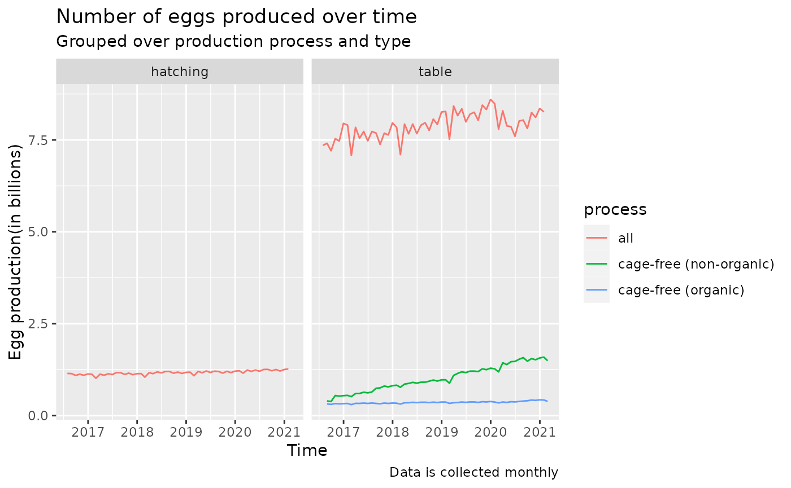
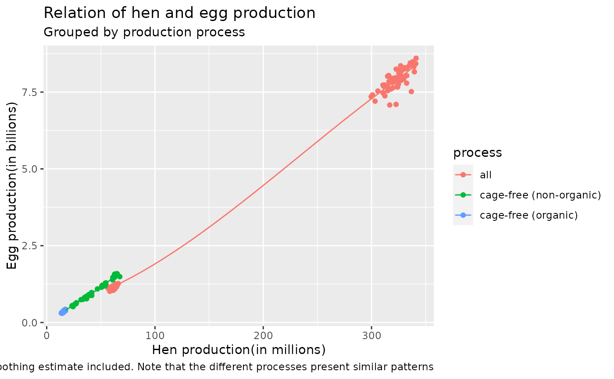

library(hiperglm)
if(!require(tidyverse)) install.packages('tidyverse')
#> Loading required package: tidyverse
#> Warning in library(package, lib.loc = lib.loc, character.only = TRUE,
#> logical.return = TRUE, : there is no package called 'tidyverse'
#> Installing package into '/home/runner/work/_temp/Library'
#> (as 'lib' is unspecified)
#> also installing the dependencies 'colorspace', 'bit', 'farver', 'labeling', 'munsell', 'RColorBrewer', 'viridisLite', 'rematch', 'bit64', 'backports', 'generics', 'blob', 'DBI', 'tidyselect', 'data.table', 'gtable', 'isoband', 'scales', 'gargle', 'uuid', 'cellranger', 'ids', 'cpp11', 'timechange', 'clipr', 'vroom', 'tzdb', 'progress', 'selectr', 'broom', 'conflicted', 'dbplyr', 'dplyr', 'dtplyr', 'forcats', 'ggplot2', 'googledrive', 'googlesheets4', 'haven', 'hms', 'lubridate', 'modelr', 'readr', 'readxl', 'reprex', 'rstudioapi', 'rvest', 'tidyr'
library(tidyverse)
#> ── Attaching core tidyverse packages ──────────────────────── tidyverse 2.0.0 ──
#> ✔ dplyr 1.1.4 ✔ readr 2.1.4
#> ✔ forcats 1.0.0 ✔ stringr 1.5.1
#> ✔ ggplot2 3.4.4 ✔ tibble 3.2.1
#> ✔ lubridate 1.9.3 ✔ tidyr 1.3.0
#> ✔ purrr 1.0.2
#> ── Conflicts ────────────────────────────────────────── tidyverse_conflicts() ──
#> ✖ dplyr::filter() masks stats::filter()
#> ✖ dplyr::lag() masks stats::lag()
#> ℹ Use the conflicted package (<http://conflicted.r-lib.org/>) to force all conflicts to become errorsIntroduction
In this vignette, we give some examples on how to use the hiperglm package to perform linear regression on datasets.
We use the US Egg Production Data from TidyTuesday. The data contains two data frames containing the production of eggs and hens over time as well as the proportion of cage-free eggs and hens in the United States, which originates from The Humane League website (url: https://thehumaneleague.org/article/E008R01-us-egg-production-data, https://osf.io/z2gxn/). The data dictionary can be found at the TidyTuesday Github repository https://github.com/rfordatascience/tidytuesday/blob/master/data/2023/2023-04-11/readme.md.
We aim to answer the question of how time and month of the year relates to the egg and hen production.
Downloading the data
We store the data in a folder named data(and create the data beforehand if it does not exist already), and download the data only if no file of the same name exists in the folder.
if(!dir.exists('data')) system("mkdir data")
if(!'tidytuesdayR' %in% installed.packages()[,1])
install.packages('tidytuesdayR')
library(tidytuesdayR)
tuesdata <- tidytuesdayR::tt_load(2023, week = 15)
eggproduction <- tuesdata$`egg-production`
cagefreepercentages <- tuesdata$`cage-free-percentages`
if(!file.exists('./data/eggprod.csv'))
write.csv(eggproduction,file='./data/eggprod.csv')
if(!file.exists('./data/cagefree.csv'))
write.csv(cagefreepercentages,file='./data/cagefree.csv')Now we load the data from the downloaded file.
Data Wrangling and Visualization
We first take a glance at the original data.
head(eggprod)
#> observed_month prod_type prod_process n_hens n_eggs
#> 1 2016-07-31 hatching eggs all 57975000 1147000000
#> 2 2016-08-31 hatching eggs all 57595000 1142700000
#> 3 2016-09-30 hatching eggs all 57161000 1093300000
#> 4 2016-10-31 hatching eggs all 56857000 1126700000
#> 5 2016-11-30 hatching eggs all 57116000 1096600000
#> 6 2016-12-31 hatching eggs all 57750000 1132900000
#> source
#> 1 ChicEggs-09-23-2016.pdf
#> 2 ChicEggs-10-21-2016.pdf
#> 3 ChicEggs-11-22-2016.pdf
#> 4 ChicEggs-12-23-2016.pdf
#> 5 ChicEggs-01-24-2017.pdf
#> 6 ChicEggs-02-28-2017.pdf
attach(eggprod)
table(eggprod$prod_type)
#>
#> hatching eggs table eggs
#> 55 165
table(eggprod$prod_process)
#>
#> all cage-free (non-organic) cage-free (organic)
#> 110 55 55We will need to extract the years and months of each entry for further analysis, and create dummy variables for the 12 possible values(1-12) of months. Also, since the file source of each entry is irrelevent data, we need to remove it. Also, we need to rescale the number of hens and eggs for better numerical representation and computation. We rescale number of hens to be in millions, and number of eggs to be in billions.
ep <- eggprod %>%
select(-source) %>%
mutate(observed_month=as.Date(observed_month)) %>%
mutate(year=year(observed_month), month=month(observed_month)) %>%
mutate(n_hens=n_hens/1e6, n_eggs=n_eggs/1e9) %>%
mutate(prod_type=as_factor(str_sub(prod_type,1,-6))) %>%
rename(process=prod_process)
ep <- ep %>%
select(month) %>%
map_dfc(1:12,function(i,x) as.numeric(x==i),x=.) %>%
set_names(nm=paste("Month",1:12,sep='')) %>%
cbind(ep, .)
#> New names:
#> • `` -> `...1`
#> • `` -> `...2`
#> • `` -> `...3`
#> • `` -> `...4`
#> • `` -> `...5`
#> • `` -> `...6`
#> • `` -> `...7`
#> • `` -> `...8`
#> • `` -> `...9`
#> • `` -> `...10`
#> • `` -> `...11`
#> • `` -> `...12`
head(ep)
#> observed_month prod_type process n_hens n_eggs year month Month1 Month2
#> 1 2016-07-31 hatching all 57.975 1.1470 2016 7 0 0
#> 2 2016-08-31 hatching all 57.595 1.1427 2016 8 0 0
#> 3 2016-09-30 hatching all 57.161 1.0933 2016 9 0 0
#> 4 2016-10-31 hatching all 56.857 1.1267 2016 10 0 0
#> 5 2016-11-30 hatching all 57.116 1.0966 2016 11 0 0
#> 6 2016-12-31 hatching all 57.750 1.1329 2016 12 0 0
#> Month3 Month4 Month5 Month6 Month7 Month8 Month9 Month10 Month11 Month12
#> 1 0 0 0 0 1 0 0 0 0 0
#> 2 0 0 0 0 0 1 0 0 0 0
#> 3 0 0 0 0 0 0 1 0 0 0
#> 4 0 0 0 0 0 0 0 1 0 0
#> 5 0 0 0 0 0 0 0 0 1 0
#> 6 0 0 0 0 0 0 0 0 0 1Now we perform some visualization on the data.
p1 <- ep %>% ggplot() +
geom_line(aes(x=observed_month,y=n_hens,group=process,col=process)) +
facet_grid(cols=vars(prod_type)) +
xlab("Time") + ylab("Hen production(in millions)") +
labs(title="Number of hens produced over time",
subtitle="Grouped over production process and type",
caption="Data is collected monthly")
p2 <- ep %>% ggplot() +
geom_line(aes(x=observed_month,y=n_eggs,group=process,col=process)) +
facet_grid(cols=vars(prod_type)) +
xlab("Time") + ylab("Egg production(in billions)") +
labs(title="Number of eggs produced over time",
subtitle="Grouped over production process and type",
caption="Data is collected monthly")
p3 <- ep %>% ggplot() + geom_point(aes(x=n_hens,y=n_eggs,col=process)) +
geom_smooth(aes(x=n_hens,y=n_eggs,group=process,col=process),
method='loess',formula='y~x',se=FALSE,linewidth=0.5) +
scale_color_discrete() +
xlab("Hen production(in millions)") + ylab("Egg production(in billions)") +
labs(title="Relation of hen and egg production",
subtitle="Grouped by production process",
caption="Smoothing estimate included. Note that the different processes present similar patterns")
print(p1)
print(p2)
print(p3) # Statistical Analysis
For the sake of demonstration, we assume that the hens production is the sum of a linear function of year, indicator of process variable, and a monthly offset for each month of the year. The eggs production is assumed to be a linear function of time, month indicators, interaction of time and process, and hen production, to include the apparent relationship between hens and eggs production.
# Fit the model on hen production
fm <- paste(c("n_hens~year*process",paste("Month",2:12,sep='')),collapse="+",sep='')
X <- model.matrix(lm(as.formula(fm),ep))
y <- ep$n_hens
# Solve using Pseudo-inverse Algorithm(by Cpp)
hg_pinv <- hiper_glm(X,y,model='linear',option=list(solver='PINV'))
# Solve using R's OPTIM BFGS algorithm
hg_bfgs <- hiper_glm(X,y,model='linear',option=list(solver='BFGS'))
rbind(optim=coef(hg_bfgs),pinv=coef(hg_pinv))
#> (Intercept) year processcage-free (non-organic)
#> optim -6531.011 3.330436 -13962.04
#> pinv -6531.011 3.330436 -13962.04
#> processcage-free (organic) Month2 Month3 Month4 Month5 Month6
#> optim 5011.709 0.6696673 1.915809 2.06659 1.292653 0.7784028
#> pinv 5011.709 0.6696673 1.915809 2.06659 1.292653 0.7784028
#> Month7 Month8 Month9 Month10 Month11 Month12
#> optim -0.08928915 0.3194181 1.157218 2.327693 3.320543 4.254143
#> pinv -0.08928915 0.3194181 1.157218 2.327693 3.320543 4.254143
#> year:processcage-free (non-organic) year:processcage-free (organic)
#> optim 6.843653 -2.570826
#> pinv 6.843653 -2.570826
# Fit the model on egg production
fm <- paste(c("n_eggs~n_hens+year*process",paste("Month",2:12,sep='')),collapse="+",sep='')
X <- model.matrix(lm(as.formula(fm),ep))
y <- ep$n_eggs
# Solve using Pseudo-inverse Algorithm(by Cpp)
hg_pinv <- hiper_glm(X,y,model='linear',option=list(solver='PINV'))
# Solve using R's OPTIM BFGS algorithm
hg_bfgs <- hiper_glm(X,y,model='linear',option=list(solver='BFGS'))
rbind(optim=coef(hg_bfgs),pinv=coef(hg_pinv))
#> (Intercept) n_hens year processcage-free (non-organic)
#> optim -33.85306 0.02571353 0.01658583 49.38086
#> pinv -33.85306 0.02571353 0.01658583 49.38086
#> processcage-free (organic) Month2 Month3 Month4 Month5
#> optim 15.76478 -0.2300121 -0.01209044 -0.1004244 -0.01609951
#> pinv 15.76478 -0.2300121 -0.01209044 -0.1004244 -0.01609951
#> Month6 Month7 Month8 Month9 Month10 Month11
#> optim -0.08698348 0.02016305 0.02292961 -0.07435272 0.01843147 -0.05031164
#> pinv -0.08698348 0.02016305 0.02292961 -0.07435272 0.01843147 -0.05031164
#> Month12 year:processcage-free (non-organic)
#> optim 0.02887029 -0.02431212
#> pinv 0.02887029 -0.02431212
#> year:processcage-free (organic)
#> optim -0.007623568
#> pinv -0.007623568We can see that PINV and BFGS gives the same result. However, we can do further tests to see the speed difference between these two methods.
system.time(replicate(1e5,hiper_glm(X,y,model='linear',option=list(solver='PINV'))))
#> user system elapsed
#> 4.483 0.011 4.494
system.time(replicate(1e5,hiper_glm(X,y,model='linear',option=list(solver='BFGS'))))
#> user system elapsed
#> 4.278 0.000 4.279We can see that pseudo-inverse is slightly faster than BFGS in linear model solving.
Summary
The hens production increases by 3.3 millions per year, while egg production is positively related to both time and hen production, and within each year, April and December shows peak production given that other conditions are fixed. Non-organic cage-free production increases faster over time while organic cage-free production increases slower than overall production.